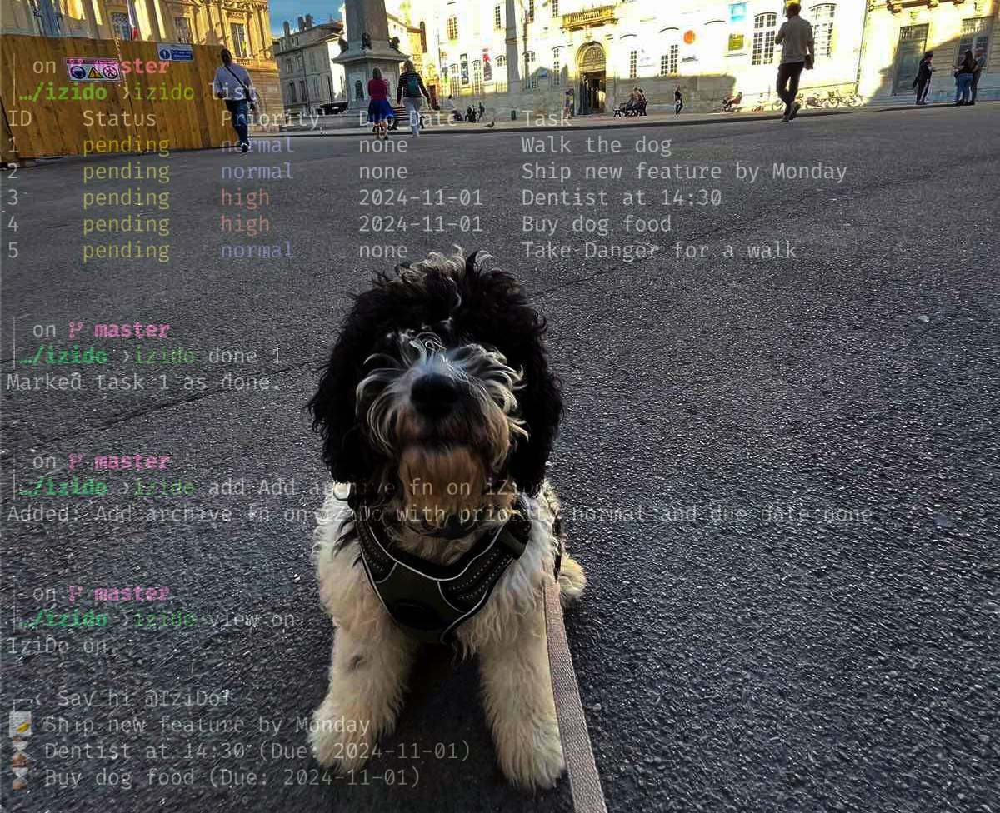

Why This Tool?
I do forget a lot, so I do need constant reminders. While exploring Starship Prompt, I discovered that it can be customized to display text around the cursor. Hmm, I thought, 'What if I add reminders for the tasks I need to do above it?' IziDo was born out of this. For those who might find this feature annoying, don't worry—you can easily toggle it on and off. Check the code below...
Features
- Add Tasks: Easily add new tasks with optional priority levels and due dates.
- List Tasks: View all your pending and completed tasks with clear formatting.
- Manage Tasks: Mark tasks as done, remove them, or clear all tasks effortlessly.
- Prompt Integration: Display your to-do list directly in your terminal prompt using Starship.
- Toggle View: Enable or disable the to-do view in your prompt to minimize distractions.
- Color-Coded Output: Enhanced readability with color-coded statuses and priorities.
- Accessible Everywhere: Use the
izidocommand from any directory in your terminal.
Demo View
Experience the sleek integration of iZiDo with your terminal prompt.
Installation
Prerequisites
- Shell: Bash or Zsh.
- Starship Prompt: Installed and configured.
- Utilities: Awk and Sed.
- Terminal Emulator: Supports Unicode and colors.
Steps
- Clone the Repository:
git clone https://github.com/idmtr/izido.gitcd izido - Install the Script:
sudo cp izido.sh /usr/local/bin/izidosudo chmod +x /usr/local/bin/izido - Configure Starship Prompt:
cat starship.toml >> ~/.config/starship.toml - Reload Your Shell:
source ~/.zshrc # For Zshsource ~/.bashrc # For Bash
Usage
Add a To-Do Item
izido add -p high -d 2024-11-01 "Go to dentist"Priority Options: high, normal, low (default
is normal).
Due Date Format: YYYY-MM-DD. If omitted, the due date is unspecified.
List To-Do Items
izido listizido list pending # List pending tasksizido list high # List high-priority tasksMarking a Task as Done
izido done 1Removing a To-Do Item
izido remove 2Clearing All To-Do Items
izido clearToggling To-Do View in Prompt
izido view onizido view offCustomization
Adjusting the Script
Modify the izido.sh script to better suit your workflow:
- Change Data Storage Format: Switch to JSON or another format if preferred.
- Add Features: Implement task editing, notifications, or integrations with other tools.
Modifying the Prompt Display
Customize how tasks are displayed in your prompt by editing the starship.toml
configuration:
- Change Icons: Replace Unicode icons with your preferred symbols.
- Adjust Colors: Modify color codes to match your terminal theme.
- Limit Task Display: Change the number of tasks shown in the prompt.
Contributing
Contributions are welcome! Follow these steps to contribute:
- Fork the Repository
- Create a New Branch
git checkout -b feature/YourFeatureName - Commit Your Changes
git commit -m "Add feature: YourFeatureName" - Push to Your Fork
git push origin feature/YourFeatureName - Open a Pull Request detailing your changes and their benefits.
Beyond Coding
Yes, iZiDo even helps me take my dog for walks! With streamlined task management, I have more time to enjoy walks with my furry friend.
Origin of the Name
iZiDo is a playful twist on the phrase "Easy Do", reflecting the application's core mission to simplify task management directly from your terminal. The name embodies the ease and efficiency that iZiDo brings to your daily workflow, making task tracking an effortless part of your coding environment.
Dialect and Slang Origins
The term "iZi" is a colloquial contraction of "easy" commonly found in various English dialects and informal speech. By adopting this slang variation, iZiDo conveys a sense of casual simplicity and approachability, inviting users to integrate task management seamlessly without disrupting their coding flow.
- "iZi": Represents the ease of managing tasks.
- "Do": Emphasizes action and productivity.
Together, iZiDo suggests that handling to-dos can be both straightforward and effective, aligning with the application's goal to help you get stuff done.
License
This project is licensed under the MIT License.